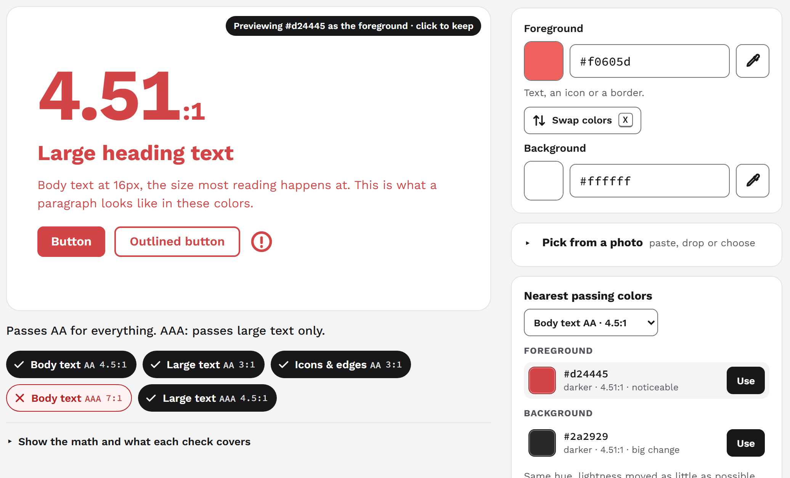

jayfox.design/lab
Contrast Lab
Not just a fail: the nearest colors that pass.
- WCAG 2.2 checks, with the math
- Box text or an icon in a screenshot
- Check a whole palette at once
jayfox.design/lab
Not just a fail: the nearest colors that pass.
